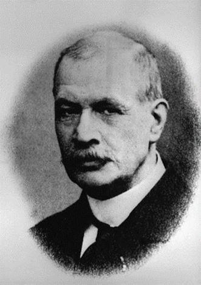
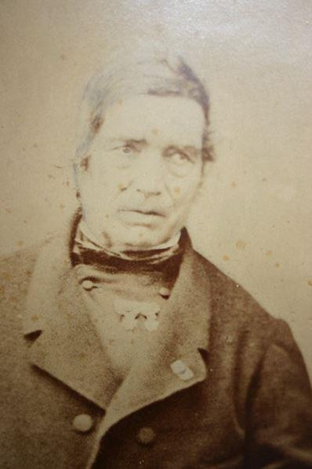
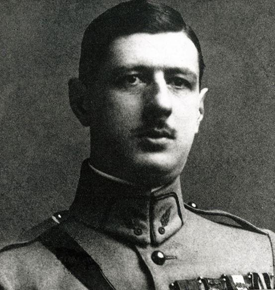
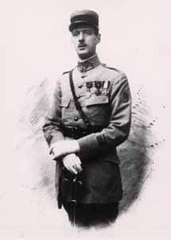
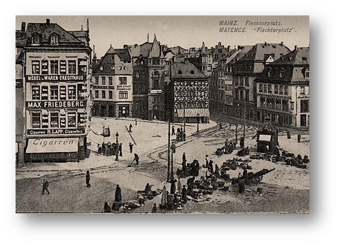
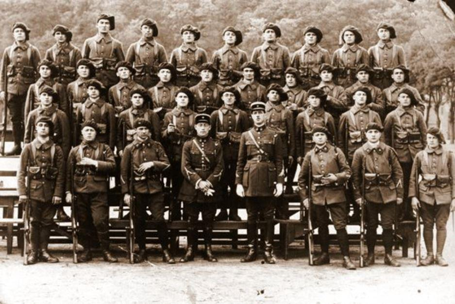
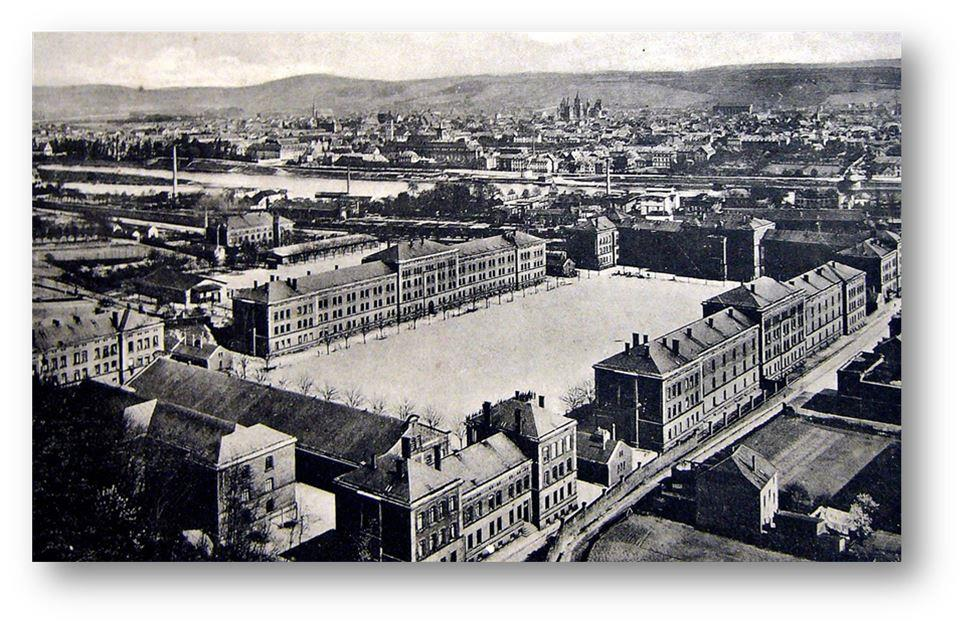

Alors que l’on admettait avoir tout lu et tout étudié de l’œuvre magistrale de Charles de Gaulle, qu’elle ne fut pas ma surprise en automne 2000 de découvrir une petite pépite littéraire enregistré jusque-là parmi les articles d’érudition militaire ; alors qu’en fait il s’agissait d’une admirable pièce de théâtre écrite par le capitaine de Gaulle en 1927.
J’étais d’autant plus heureux de cette trouvaille qu’une saynète, écrite par Charles de Gaulle enfant en 1906, avait été monté pour la télévision français en 1980. Par conséquent, la pièce intitulé Le Flambeau pouvait être considérée comme étant parfaitement inexploitée. Il y a tout juste vingt ans, et grâce à l’accord de l’Amiral Philippe de Gaulle, j’ai eu la faculté de pouvoir sortir Le Flambeau de l’oubli et de présenter cette pièce originale dans une première et très restrictive édition ; puis dans une édition bilingue à l’occasion du 40ème anniversaire du traité de l’Élysée le 22 janvier 2003. Aussi, afin d’honorer la mémoire du Général de Gaulle, en cette année du 130ème anniversaire de sa naissance et du 50ème anniversaire de sa mort, une réédition du Flambeau, devrait voir le jour en novembre de cette année. Elle devrait intéresser toutes celles et ceux qui veulent promouvoir auprès des jeunes générations cette pièce présentant deux concepts tombés en désuétude aujourd’hui : le don de soi et l’amour pour la Patrie. Aussi il m’a paru intéressant de réaliser une présentation succincte de Charles de Gaulle jeune écrivain et le contexte de l’époque durant laquelle il a rédigé cette pièce de théâtre et qui devrait assurément intéresser toute celles et ceux qui s’intéresse à étudier la vie de ce personnage hors normes.
Les de Gaulle une famille d’écrivains
« for anything so overdone is from the purpose of playing, whose end, both at the first and now, was and is, to hold, as 'twere, the mirror up to nature.1»
Citation du Hamlet de Shakespeare.
« Comme César, comme Napoléon, le général de Gaulle a le style de son destin, un style accordé à l’Histoire…Le général de Gaulle, en voilà un qui est sûr de son éternité ! les événements le portent, mais plus encore le récit qu’il en fait. Certes, le classicisme, ici, ne s’enrichit d’aucun apport, tout est d’après l’antique : c’est le ton de Bossuet, mais on ne saurait être moins guindé, ni plus brûlant, ni souvent plus corrosif… »
François Mauriac, 11 octobre 19542
A la question « Comment un écrivain pourrait-il servir la France ? » que pose Albert Camus3 au général, Charles de Gaulle répond que « Tout homme qui écrit et écrit bien, sert la France », cette réplique au Prix Nobel de littérature illustre et définit non seulement l’auteur de la Peste, mais autant la famille de Gaulle à laquelle on peut adjoindre cette citation de Lamartine :
« La source du génie est souvent (…) dans la famille et quelquefois la prophétie de la destinée. ».
En effet, dès son plus jeune âge, Charles de Gaulle baigne dans un univers familial littéraire. C’est à partir de cette époque que se manifeste tout naturellement son intérêt et son inclinaison pour les lettres et la naissance de sa vocation d’écrivain.
C’est une tradition familiale et ses grands-parents, Philippe et Joséphine de Gaulle, consacrent déjà leur vie à la littérature ; parmi de nombreux ouvrages se distinguent la remarquable Vie de Daniel O’ Connor, Libérateur de l’Irlande ou encore l’Histoire de Paris et de ses environs que le poète Charles Nodier4 honore d’une préface. Son père ensuite, Henri de Gaulle professeur de lettres, de latin et de grec chez les Jésuites est un amoureux de la langue. Les influences des littératures grecque et latine5, prodiguées par son père, conjuguées à celles du grand siècle nourriront largement son style rédactionnel et très tôt son goût se manifeste pour les belles lettres.
Son premier écrit est un texte « prémonitoire » d’une vingtaine de pages intitulé La Campagne d’Allemagne où il se représente déjà commandant d’une armée en 1930, levée pour défendre la France contre l’envahisseur allemand…Il a tout juste 15 ans ! Sous le pseudonyme de Charles de Lugale, il rédige d’autres écrits dont une petite saynète comique, publiée en 19066, qui met aux prises un bourgeois et un brigand qui s'intitule : Une Mauvaise rencontre7. Bien que féru d’histoire et des lettres, il choisit néanmoins le métier de armes.
En 1924, le capitaine de Gaulle rédige son premier ouvrage : La discorde chez l’ennemi8. D'emblée, l'écrivain perce sous l'historien et le politique derrière le militaire, comme le signale si justement Hervé Gaymard9 dans sa présentation inspirée qui introduit la réédition de cet ouvrage.
Entre les années 1920 et 1930, de Gaulle10 écrit et publie de nombreux articles dans de nombreux journaux, dont la Revue militaire française11. Lorsqu’il rédige cette pièce Charles de Gaulle alors âgé de 37 ans, travaillait depuis plusieurs mois, et à la demande du Maréchal Pétain, sur un ouvrage traitant de l’histoire de l’armée française 12 à travers les âges. Il n’est pas interdit de croire que ce fut un effet déclencheur pour la rédaction de sa pièce.
C’est en mars puis en avril 192713, qu’il fera publier le Flambeau dans les numéros 69 et 70 de la Revue militaire. La pièce dans laquelle il exprime la grandeur et la servitude de l’état de soldat entre les guerres de la Révolution à la seconde Restauration14.
Toutefois, pour certains biographes son incontestable carrière d’écrivain ne commencerait clairement qu’avec la rédaction de ces mémoires de guerre. Pour ma part je ne peux souscrire à cette appréciation car c’est méconnaitre et faire abstraction de la qualité de ses écrits et comme le souligne justement Pierre Gueniffey : « Cette pièce (Le Flambeau) fait en quelque sorte le lien entre les premiers essais littéraires et les œuvres de maturité que sont Vers l’armée de métier et La France et son armée15 » qui sont unanimement reconnus pour être des œuvres de référence dans leur domaine.
« On a mis en évidence son sens du mot exact, sa maîtrise du vocabulaire qu’agrémente un brin d’archaïsme lorsqu’il fait revivre avec bonheur des mots oubliés.»
Depuis l’antiquité, l’histoire inspire les auteurs et les acteurs de théâtre. Sur toutes les scènes du monde entier, ils retracent les grandes époques pour les faire revivre et connaitre au public. Le Flambeau, de Charles de Gaulle, n’y fait pas dérogation.
Œuvre de la parole et théâtre narratif, Le Flambeau est une pièce en trois scènes que l’on dénomme aujourd’hui théâtre-témoignage. A travers cet écrit, Charles de Gaulle prouve qu’il maîtrise également le genre théâtral. La pièce entraîne les lecteurs successivement à travers différentes périodes essentielles de l’histoire militaire française pour un voyage dans le temps. Le style, ample et régulier, classique est coupé de formules brèves, entraine le lecteur dans l’épopée de quatre personnages.
Passionné d’histoire, de Gaulle embrasse les guerres révolutionnaires, le Consulat, le 1er Empire et la Restauration. Par cette division, chaque scène forme une partie distincte d’une période achevée. Un des quatre personnages seulement est fictif, et en même temps plausible. En favorisant de recueillir leurs témoignages imaginaires pour en faire une pièce, de Gaulle met leurs paroles au premier plan où l’action est restreinte à son minimum provoquée par la narration. Les faisant dialoguer, l’auteur leur donne consistance ; il en fait des lieux de passage qui nous ouvrent sur les épisodes essentiels de l’armée révolutionnaire puis impériale.
Le Flambeau compile ainsi trois dialogues sur trois scènes s’étalant durant des périodes politiques et militaires majeures de la fin du XVIIIe et du début du XIXe siècle. Débutant son récit durant les guerres de l’an IIi, qui feront de l’ancien royaume une France nouvelle, un briscard enseigne à un jeune volontaire les grandeurs et servitudes d’un citoyen aux Armées. Il en est ainsi pendant sept ans.
Il se poursuit dans la seconde scène pendant la période de la campagne d’Italie puis du 1er Empire, « temps d'arrêt pour toutes les expressions de la vie politique intérieure 16», où le briscard mutilé passe les consignes au jeune Coignet et lui confie ardemment le flambeau ; pour s’achever dans la bonne ville d’Auxerre durant la seconde Restauration en 1826ii. Après plus d’une décennie de campagnes napoléoniennes, le capitaine de la garde impériale Coignet termine sa carrière comme demi solde et transmet au jeune Canrobert le flambeau de la conscience et des vertus militaires.
 Le capitaine CoignetAvec cette pièce, de Gaulle arrive à nous séduire par la légèreté de sa plume et la valeur des principes qu'il véhicule. Le Flambeau, devient enseignement en nous permettant de saisir précisément comment se met en place une réflexion sur la conduite des évènements en cas de crise, la conduite à adopter envers les hommes et à tenir face au destin.
En leur prêtant l'action et le prestige du talent militaire au service de la patrie, Charles de Gaulle tend également à élever l’âme et célébrer les nobles sentiments du patriotisme, en particulier lorsqu’il évoque l'histoire et ses grandes figures militaires du passé tout en blâmant les passions sordides et basses.
Au-delà de l’intérêt que suscite tout naturellement cette œuvre originale pour des amateurs érudits d’histoire, et des écrits du Général, c’est toute la philosophie militaire d’un Charles de Gaulle trentenaire qui transpire dans ces textes. Nous retrouvons là une foule d'éléments de la future pensée gaullienne.
Loin d’être anecdotique et, comme le souligne très justement Jean Lacouture17 dans son ouvrage de référence, c’est « un repère utile dans l’évolution de la réflexion historique de Charles de Gaulle18 ».
Dans les biographies gaulliennes, Le Flambeau est invariablement recensé parmi ses écrits et articles et n’est malheureusement pas répertoriée comme une pièce de théâtre à part entière.
Certains textes de Charles de Gaulle sont aujourd’hui tout naturellement au programme des classes littéraires aussi ai-je trouvé nécessaire, en cette année commémorative du 130ème anniversaire de sa naissance et du 50ème anniversaire de son décès, d’honorer sa mémoire par cette édition et sortir de l’oubli ce manuscrit qui traduit bien la philosophie de Charles de Gaulle d’alors.
Une « plume » pour Pétain. Charles de Gaulle 1925 – 1927
À compter du 1er juillet 1925, le capitaine de Gaulle est officiellement détaché à l'état-major particulier du Maréchal Philippe Pétain vice-président du Conseil Supérieur de Guerre19. Là, comme officier rédacteur, le héros de Verdun l’a « chargé d’écrire un travail historique ». En effet, le maréchal brigue l'Académie française et désire profiter de l’aide de ce brillant officier pour y parvenir et dont il connait par ailleurs la qualité de la plume en ayant lu La Discorde chez l'ennemi20.
Le Maréchal Pétain demande donc de lui préparer la rédaction d'un écrit devant lui permettre de soutenir cette candidature. Le capitaine de Gaulle s’exécute et pendant plusieurs mois entame des travaux d’écriture sous le titre Le Soldat à travers les âges.
Seulement, et malgré sa position privilégiée, il est dans l’impérative obligation comme tout officier breveté de l’École Supérieur de Guerre ayant vocation à obtenir un commandement, d’effectuer un cursus au sein d’un État-Major.
Départ pour l’Armée française du Rhin
Le capitaine de Gaulle est alors appelé à rejoindre la ville de Mayence, pour le 5 octobre 1926, au 4ème bureau en charge de l’intendance de l’état-major de l’armée française du Rhin. De Gaulle fait ainsi partie de ces nombreux officiers qui, au cours de leur carrière, suivent un séjour en zone d’occupation en Allemagne.
Ce n’est pas le poste dont il rêvait, mais seuls les premiers du classement de l’École Supérieur de Guerre peuvent prétendre et obtenir un choix plus prestigieux. Quoiqu’il en soit, c’est un passage obligé pour un officier ayant vocation à occuper des hautes fonctions dans la hiérarchie militaire.
« L’armée française représentait un excellent prisme d’observation. Côtoyant chaque jour les habitants, elle put comprendre leurs préoccupations et leurs aspirations. Instrument fidèle du gouvernement français et des instances interalliées, elle reflétait la politique internationale de l’entre-deux-guerres, ses hésitations et ses ambigüités.22 »
La présence française sur les bords du Rhin
L’armistice signé, dans la clairière de Rethondes près de Compiègne, le 11 novembre 1918, ne signifie pas l’arrêt des opérations militaires pour l’armée française. En effet, elle sera chargée d’occuper, avec les Alliés, une partie de la rive gauche du Rhin.
Lors de l’entrée des troupes françaises sur le territoire allemand, une partie de ces unités s’installe à Mayence ainsi que dans de très nombreuses communes périphériques ; autant que dans d’autres villes de la zone d’influence française. Dès lors, elles tiendront, durant l’entre-deux-guerres, un rôle politique ou militaire dans un contexte international tendu.
Le gouvernement militaire français est installé dans un immense et majestueux bâtiment au centre-ville à Mayence. Le commandement français a su profiter des très nombreuses infrastructures pour y installer ses services civils et militaires. En l’occurrence, le capitaine de Gaulle occupera un bureau dans un de ces beaux édifices officiels allemands dont l’architecture est tellement appréciée que nombre d’entre eux servent de motifs de cartes postales vendus aux soldats.
Mayence, la plus française des villes allemandes ?
C’est accompagné de son épouse et de ses enfants que de Gaulle prend la direction de l’Allemagne. Ce sera le premier contact avec le pays23 et la population ennemie à l’issue de la guerre.
Féru d’histoire, le capitaine De Gaulle sait que Mayence a une très vieille tradition française qui ne remonte pas seulement à l’époque de la Révolution française, comme sous l’Empire napoléonien, mais qu’elle a laissé des traces encore vivaces dans l’esprit commun des guerres de dévastation de Louis XIV dans le Palatinat.
La vie au quotidien
Malgré les pénuries de la fin de la guerre, et les ressentiments de la population à l’égard des Français, Charles et Yvonne de Gaulle apprennent à profiter des charmes de la ville et de ses environs. Ils découvrent dans le vieux centre historique de Mayence, le grand choix de boutiques dans lesquelles les familles et les soldats français se procurent des cadeaux originaux en guise de souvenirs qui sont ensuite envoyés à leur famille en France.
Pour Charles de Gaulle et sa famille, la vie est bien distincte de celle du temps de guerre et bien plus uniforme qu’à Paris. Il y a le service courant entrecoupé de missions. Les régiments stationnés à Mayence et dans les proches environs, s’entraînent et réalisent quotidiennement et par tout temps de nombreux exercices en faveur de l’État-major24. En effet, bien que le climat de la région soit océanique, chaud et sans saison sèche, l’hiver est relativement rude à Mayence et le fonctionnement du service est rendu extrêmement pénible et très éprouvant.
Enfin, célébrations privées et commémorations militaires, défilés du 14 Juillet, du 11 Novembre, funérailles, inspections, sont le menu de cette vie de garnison à laquelle Charles de Gaulle participe. Tout laisse à penser qu’outre l’écriture, la famille de Gaulle profite de son affectation en Rhénanie pour visiter les proches environs et découvrir la Région.
Une cohabitation franco-allemande difficile
Le capitaine de Gaulle se rend bien compte qu’il règne au sein de la population allemande, le sentiment d’avoir été injustement traités par les Alliés, mais surtout par les Français.
Le tracé arbitraire des frontières laisse place à l’amertume et à une rancune tenace à leur égard, car des millions d’Allemands sont coupés du Reich25. Cette situation ne favorise guère l’amélioration des relations internationales et bilatérales26. Ainsi, bagarres et voies de faits sont à l’ordre du jour27.
Les faits commis contre la population mayençaise appellent de la part des autorités allemandes à consigner les incidents collectifs comme individuels dans de nombreux rapports de police au préjudice de l’armée française. Sont notamment mis en exergue les incidents avec les soldats des troupes coloniales28/29. A l’occasion de ces incidents30, le ministère allemand des Affaires étrangères publie « une collection de témoignages, de plaintes et actes de violences commises », pour mettre la France en accusation sur le plan international.
Il y aura pourtant des fraternisations, avec les Rhénans tenants du séparatisme prôné par les autorités civiles et militaires françaises. Des liens personnels sont également tissés entre les soldats français et de jeunes rhénanes, mais dans l’ensemble, ces relations sont toujours marquées par la suspicion et l’inimitié de la part de la grande majorité de la population.
Retour à Paris
Après six mois de stage, le capitaine de Gaulle achève remarquablement son passage en terre rhénane. Très bien noté « il est dans les conditions pour une inscription au tableau d’avancement ». Il regagne le cabinet de la vice-présidence du conseil supérieur de guerre31 du Maréchal Pétain où leur coopération se poursuit.
Malgré les travaux en faveur du Maréchal, le capitaine de Gaulle se laisse le temps d’écrire des articles dans la Revue Militaire française. C’est ainsi qu’en mars et avril 1927, paraissent la 1ère et 2ème partie du Flambeau.
Cette dernière date coïncide avec la dissolution et l’évacuation de la brigade mixte de la Sarre ayant déjà débuté en 192732, et sur laquelle l'Allemagne s'appuiera notamment pour obtenir du gouvernement français l'évacuation de la Rhénanie, quelques années plus tard.
Charles de Gaulle est le témoin direct des tensions politiques et des bouleversements, que subit la République de Weimar, malgré les tentatives de part et d’autre du Rhin pour inciter à un rapprochement franco-allemand (tels Ferdinand Buisson fondateur et président de la Ligue des Droits de l'Homme, partisan de la première heure de la Société des Nations qui reçoit, avec le professeur allemand Ludwig Quidde33, le prix Nobel de la Paix).
Depuis son séjour en Allemagne, il sait toutefois que l’opposition latente, entre les tenants du pacifisme et les revanchards nationalistes en France comme en Allemagne, porte des coups fatals contre les deux républiques et freine toute relation normale et durable entre les deux pays.
Sous la houlette, et en présence du Maréchal, le capitaine de Gaulle présente à l'École de guerre trois conférences remarquées, respectivement intitulées : « L'action de guerre et le chef », « Du caractère » et « Du prestige » qui vont servir de matrice en 1932 pour son deuxième ouvrage : Le Fil de l'épée.
Départ pour Trèves
C’est alors qu’un différend oppose et sépare bientôt les deux hommes sur l’ouvrage qu’a intégralement rédigé de Gaulle.
D’heureuses nouvelles vont malgré cela réjouir Charles de Gaulle. Il est d’abord promu chef de bataillon au choix le 25 septembre 1927 et prendra le commandement du 19ème bataillon de chasseurs alpins34 de la 9ème demi brigade de chasseurs à Trèves le 15 octobre 1927 ; en outre, son épouse Yvonne attend leur troisième enfant.
Impatient de rejoindre sa nouvelle garnison, et de pouvoir enfin reprendre un commandement, Charles de Gaulle quitte promptement les salons feutrés de l’État-major parisien du boulevard des Invalides pour rejoindre en famille l’Allemagne, la ville de Trèves le 11 octobre 1927.
Après avoir servi à Mayence puis durant deux années à Trèves (qu’il quittera en 1929), le chef de bataillon de Gaulle prend rapidement conscience du danger du que représente les nationaux socialistes d’Adolf Hitler. Particulièrement lucide et de façon prémonitoire, il augure déjà que :
« L’armée du Rhin n’en a plus pour longtemps. La force des choses abat ce qui demeure en Europe des barrières convenues et précieuses. Il faut être convaincu que l’Anschluss est proche, puis la reprise par l’Allemagne, de force ou de gré, de qui lui fut arraché à la Pologne. Après quoi, on nous réclamera l’Alsace. Cela me parait écrit dans le ciel. »
Lettre de C. de Gaulle à son ami le capitaine Nachin.35
A.W.
NOTES ET RÉFÉRENCES
1. Le théâtre est aussi un miroir tendu à la nature : le spectateur, comme l'acteur, vient chercher une réponse, se construire une identité.
2. In : Bloc-notes, Ed. Flammarion, Pris, 1958, pp. 129-120
3. Lors d’une visite à Colombey-les-deux églises dans les années 1950.
4. Jean Charles Nodier est un écrivain, romancier et académicien français (29 avril 1780 - 27 janvier 1844 ). On lui attribue une grande importance dans la naissance du mouvement romantique français.
5. In : Prof. Alain Larcan, Charles de Gaulle, Itinéraires intellectuels et spirituels, presses ….
6. Ces textes ont été rassemblés par l’Institut Charles de Gaulle sous le titre Articles et Écrits, (Plon 1975). En 1980, cette œuvre se verra monter à la télévision française.
7. Écrite en Alexandrins, la pièce met aux prises un bourgeois et un brigand. À l’époque le jeune de Gaulle participera à un concours littéraire à Lille où il présentera sa pièce. Ayant été retenu comme lauréat, le prix cette première consécration lui permettra de la faire publier. Par conséquent c’est le premier ouvrage officiellement enregistré au sein de la Bibliothèque Nationale de France.
8. Premier livre publié par Charles de Gaulle, en 1924, La Discorde chez l'ennemi est un essai d'histoire d'immédiate, le seul d'envergure consacré aux causes profondes et directes de l'effondrement du Reich wilhelmien. L'auteur explique et raconte les dissensions au sommet, les erreurs stratégiques et diplomatiques, comme la guerre sous-marine à outrance ; enfin la crise militaire et politique entraînant la déroute de l'automne 1918, conclue par la chute de Guillaume II et l'armistice du 11 novembre.
9. Hervé Gaymard, né le 31 mai 1960 à Bourg-Saint-Maurice en Savoie, est un homme politique français. Plusieurs fois secrétaire d'État, il est nommé ministre de l'Agriculture (2002-2004) puis ministre de l'Économie, des Finances et de l'Industrie (2004-2005). Il préside la Fondation Charles de Gaulle depuis 2018.
10. De février 1921 jusqu'à mai 1922, Charles de Gaulle est professeur d'histoire à Saint-Cyr. Le 2 mai 1922, il est admis à l'École Supérieure de Guerre où il restera deux ans. Ayant obtenu des notes médiocres il est affecté dans un emploi subalterne à l'État-major de Mayence en 1924. Le maréchal Pétain l'appelle à son cabinet comme officier rédacteur et l'impose comme conférencier à l'École de Guerre, à la fin de cette affectation il obtiendra le commandement du 19ème BCP en Rhénanie occupée en 1927.
11. « (…) la première version de la Revue militaire française apparaît en janvier 1869. Rédigée principalement par des officiers. D’esprit très positiviste, la revue a pour but initial de vulgariser le goût des études scientifiques militaires à une époque où le corps de l’état-major, censé produire une réflexion intellectuelle, est fortement contesté. Durant la courte vie de la première mouture de Revue militaire générale, les auteurs présentent essentiellement soit des rapports de la commission militaire française soit des résumés des conférences régimentaires, soit enfin après 1870 les conférences du ministère de la Guerre où il est déjà question, près de vingt ans avant Lyautey, du rôle social de l’armée. La Revue militaire française réapparaît brièvement en 1875, à un moment où le corps d’état-major connaît une ultime réforme (1873) avant sa disparition définitive en 1880. En juillet 1921, une nouvelle revue militaire française réapparaît. Publiée avec le concours de l’état-major de l’armée. Dans le cadre de la sortie de guerre, il s’agit donc de faire renaître une revue militaire destinée à l’élite politique et militaire du pays afin que celle-ci soit « exactement renseignée sur l’évolution future de la puissance des autres États, de posséder des données précises, contrôlées, sur l’enchaînement des causes et des effets au cours de la lutte mondiale qui s’achève à peine », d’aider enfin ces élites à prendre leurs décisions en connaissance de cause. Il s’agit donc simplement de faire revivre le meilleur de ce qu’avait produit l’armée entre 1870 et 1914 tout en orientant davantage l’écriture vers deux grandes catégories d’analyses : les études de renseignement transmises par le 2ème bureau et les analyses du Service historique (…), la plupart des auteurs appartiennent à l’élite de l’armée de l’entre-deux-guerres que ce soit Gamelin, de Gaulle, Doumenc, Delmas et il ne fait de doute pour personne que la revue sert de tribune aux plus hautes instances militaires françaises de l’entre-deux-guerres, à quelques exceptions près (Pétain). » In : La Revue militaire française par Julie d'Andurain L’ancienne en 1869-1875
12. Le manuscrit servira de base à la France et son armée qu’il publiera sous son nom en 1938.
13. Bien que présenté en 1927, l’origine de ce texte remonterait à une version abandonnée d’un chapitre du Soldat à travers les âges. Ce travail tient sa source d’une étude consacrée à l’histoire militaire française en 1925 commandée et sous la direction du Maréchal Philippe Pétain, mais écrite par de Gaulle. La décision du Maréchal de revendiquer la paternité des textes rédigés par de Gaulle sera la source d’un important contentieux entre les deux hommes et le début d'un désaccord grandissant qui scellera leur destin en 1940, In : Herbert R. Lottman, coll. Tempus, De Gaulle/Pétain-règlement de compte, Ed. Perrin, 2008.
14. La Seconde Restauration est le régime politique de la France de 1815 à 1830. Elle succède aux Cent-Jours, qui avaient vu Napoléon revenir brièvement au pouvoir. Après une période de confusion, Louis XVIII revient sur le trône. Débute l'expérience d'une monarchie constitutionnelle qui essaie de recréer une unité dans le pays sur des bases héritées à la fois de la Révolution et de l'Ancien Régime. Après une période marquée par un bref retour au pouvoir des monarchistes absolutistes ultras, qui se caractérise notamment par la Terreur blanche, le régime prend de 1816 à 1820 un tournant plus libéral. En 1824, à l'arrivée de Charles X sur le trône, c’est sous son règne que sont adoptées les mesures les plus ancrées dans l'idéologie absolutiste. La fin des années 1820 marque une opposition de plus en plus marquée de la part des libéraux. Les réponses inadaptées du souverain face à l'opposition entraînent la Révolution de 1830 et la mise en place de la monarchie de Juillet. Si l'historiographie républicaine a souvent présenté la période comme un retour en arrière et une parenthèse sans grande importance, la Restauration reste un moment clé pour la France du XIXe siècle, puisqu'elle voit le pays s'initier à certaines des libertés acquises depuis la Révolution, mais aussi le développement économique du pays qui s'industrialise progressivement. La fin de cette période voit également les débuts de la présence française en Algérie. Sources : Benoît Yvert, Histoire de la Restauration (1814-1830) : naissance de la France moderne, Perrin, 1996
15. In : De Gaulle et Bonaparte, deux héros français, Ed. Perrin 2017.
16. In : De Gaulle, France Informations n ° 138, p.14.
17. In : Théodore Muret, L'Histoire par le théâtre, 1789-1851. La Révolution, le Consulat, l'Empire, Amyot Éditeur Paris, 1865.
18. Dans les années 1950 et 1960, il fut l'un des plus vigoureux détracteurs du général de Gaulle. À la fin des années 1980, sa biographie de De Gaulle (De Gaulle ou l'éternel défi) tranchait avec ses opinions de jeunesse. Il reconnut alors avoir évolué et être devenu un de ses plus grands admirateurs.
19. In : Jacques Lacouture, De Gaulle, Tome I, Ed. Seuil, 1984.
22. In : Emmanuel Pénicaut, L’Armée française en Sarre, 1918-1930, Revue historique des armées.
23. Aux côtés de ses camarades des régiments de l’aéronautique militaire et de la flottille du Rhin, les condisciples du capitaine de Gaulle, ainsi que leurs soldats, stationnent sur l’ensemble des villes et communes de la zone d’occupation française.
24. Aux premiers jours du printemps les unités accomplissent le cycle des grandes manœuvres et mobilisent la plus grande partie des régiments pour livrer à l’État-major des exercices communs entre les escadrilles des régiments de l’aéronautique militaire avec les divisions d’infanterie.
25. Il faut avoir dans l’esprit qu’au sein des écoles allemandes, tous les enfants connaissent les territoires amputés ainsi que les milliards de réparations exigés par les Alliés.
26. Dès le début de l’occupation, des soldats français molestent civils et officiels rhénans. Les agressions contre l’occupant sont également monnaie courante. Sous des airs de (fausse ?) relative passivité allemande, l’omniprésence militaire française comporte son lot de tensions avec les membres de la communauté rhénane qui dégénèrent régulièrement en rixes sanglantes.
27. Incidents entre les troupes et la population et incidents collectifs ou anonymes concernant les troupes de couleur. Septembre 1919-avril 1923. Pour appuyer notre propos, ci-joint quelques plaintes enregistrées dans les rapports des policiers allemands. Collision entre soldats français et policiers allemands à Mannheim ; plainte contre le capitaine Turnes pour voies de fait sur deux Allemands à Mayence ; bagarre entre policiers allemands et tirailleurs indigènes au Stadtpark à Mayence ; trois soldats marocains molestent trois personnes sur le pont de Mayence ; incident de la Synagogenstrasse à Mayence ; incident entre le sous-officier Grevel et le gérant du cabaret « Sans-Souci » à Mayence ; agression de Wolf, Davinast et Weil par trois sapeurs à Mayence ; tirailleur blessé à coups de couteau dans un café de Mayence ; agression d'un officier français à Mayence ; incident survenu entre deux agents de la Sûreté française et un agent de police allemand à Mayence ; le chef de la musique des Marocains maltraite sa propriétaire à Mayence-Kostheim ; Incidents divers et mémoires allemands. 1920-1925
28. Mémoires du commissaire allemand concernant des incidents avec les troupes de couleur : n° 1 (juillet 1920), mémoire et traduction, lettres de principe et circulaires, divers (1920-1922) ; n° 2 (novembre 1920), texte et traduction, lettres et circulaires, articles de presse (1920) ; n° 3 (juin 1921), texte, lettres de principe et circulaires, articles de presse, divers, réponse au commissaire d'Empire (1921). Mémoire du ministre de l'Intérieur allemand sur les excès commis par les troupes alliées d'occupation en territoires occupés de 1918 à 1922, intitulé « Die Ausschreitungen der Besatzungstruppen im besetzten rheinischen Gebiet » (Berlin 1923). Incidents dans la Ruhr en 1923 : correspondance, extraits de journaux, brochure concernant les actes d'atrocités des troupes franco-belges, intitulée « Sammlung eidlicher Aussagen über Gewaltakte der französisch-belgischen Truppen im Ruhrgebiet », publié par le ministère allemand des Affaires étrangères (erste Folge, Berlin 1923).
29. Sur les 95 000 soldats français présents deux ans plus tard, 20 000 appartiennent aux régiments coloniaux et sont originaires pour la majorité d'Afrique du Nord. Les chiffres divergent selon les sources. Certains parlent de 10 000 soldats coloniaux sur un effectif total du corps d’occupation de 85 000 militaires. D’autres estiment qu’entre 1919 et 1921, il y a 14 000 à 40 000 soldats coloniaux. In : Les troupes coloniales françaises et l’occupation de la Rhénanie (1918 - 1930) Christelle Gomis. 5 juin 2014.
30. Exacerbant encore le racisme latent qui connaîtra son paroxysme lors de l’occupation de la Ruhr
31. le conseil supérieur de la guerre a été créé par décret le 27 juillet 1872 ; il était formé pour réunir les principaux généraux des différentes armes, en présence du chef d'état-major et en l'absence du ministre, pour coordonner les différentes actions au sein de l'armée.
32. SHD/DAT, arch. de Russie, EMA 1, c. 84, d. 2, lettre du ministre de la Guerre au général commandant les troupes de garnison de la Sarre, Paris, 29 mars 1927.
33. Ludwig Quidde était un historien, un écrivain, un pacifiste et un homme politique libéral allemand sous l'Empire allemand et la République de Weimar. En tant que pacifiste, il s'engage de nombreuses années comme chef de la Deutsche Friedensgesellschaft (DFG), participe à de nombreux congrès internationaux pour la paix et organise par exemple le seizième congrès mondial de la paix en 1907 à Munich. Ludwig Quidde meurt en exil en Suisse en 1941, à l'âge de 83 ans.
34. « Le séjour de Germersheim fait date dans notre histoire. Si l’absorption des derniers éléments du 32èmeB.C.P., vieux compagnon d’armes de Saint-Quentin, que le 19ème relève sur les bords du Rhin, ne constitue pas un évènement capital, si la garde au pont de bateaux est médiocre mission pour les chasseurs de Grivesnes, c’est à̀ Germersheim que le bataillon troque son bonnet de police contre le grand béret. Devenu 19ème B.C.A., il s’équipe sur le mode alpin : des mulets remplacent ses voiturettes porte-mitrailleuses. Puis, le 15 septembre, les nouveaux alpins remontent la Queich et s’installent à Landau pour rendre les honneurs au général Gérard qui commande la 8ème armée d’occupation. Et, lorsqu’au mois d’octobre la cessation des hostilités est enfin reconnue sur le plan administratif, que les deux armées d’occupation font place à l’« Armée du Rhin », le quartier général de Landau est dissout et la 47ème division se regroupe entre Nahe et Moselle. Fanfare en tête, le 19ème B.C.A. défile dans les rues de Trèves, sa nouvelle résidence. » In : Le Lieutenant-colonel Montagnon, commandant le 19ème BCP, Historique du 19ème BCP - Page 37 de 60 – 15 septembre 1950. Numérisé́ par MT .
35. In : Paul Zing, De Gaulle en Lorraine : Histoire de fidélité, ED. G. Louis 1992.
i L’an II du calendrier républicain, correspond aux années 1793 et 1794 du calendrier grégorien. Le calendrier entre en vigueur à partir du 6 octobre 1793 (15 vendémiaire II), au lendemain de la date du décret l’instituant, l'année se termine le 21 septembre 1794.
ii « La Restauration est l’héritière malgré elle d’une triple tradition militaire : la première remonte aux années de l’Ancien Régime, qui ont vu l’émergence d’un ministère fort sous l’égide d’un certain nombre de ministres, (…). La deuxième est révolutionnaire, et synonyme d’une armée nationale, axée sur la conscription et l’émergence d’une économie de guerre. La troisième, enfin, la plus immédiate et la plus spectaculaire est impériale. Régime d’essence militaire, l’Empire a construit la plus grande partie de sa réputation, appelée à devenir légende, sur une administration rigide et centralisée où l’armée occupe une place particulière, directement placée sous la direction de l’empereur, secondée par plusieurs entités tenant avant tout à des personnalités (…). En 1815, le retour des Bourbons à la tête de la France est le prélude d’un grand nombre de bouleversements politiques et sociaux (…). Les cadres des régiments sont entièrement reformés, tandis qu’un certain nombre d’anciens émigrés récupèrent leurs commandements, au prix de vives polémiques. » In : Vincent Haegele, « Le marquis de Clermont Tonnerre, ministre de la Guerre, et le renforcement de l’armée française sous Charles X (1825-1828) » Revue historique des armées, pp. 93-104, 270/2013.
Partager cette page